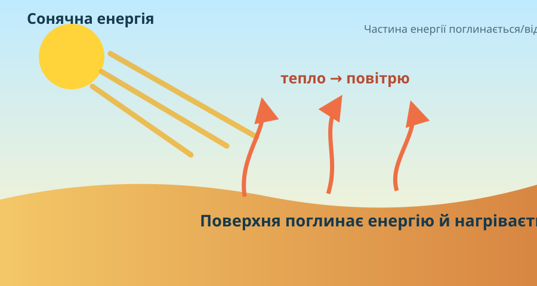
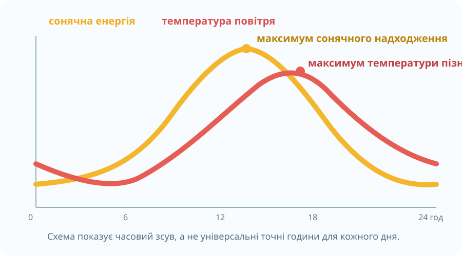

Що саме нагріває повітря біля нас?

Енергетичний бюджет
Частина сонячної енергії поглинається атмосферою, але значна частина доходить до земної поверхні. Нагріта поверхня передає енергію повітрю через теплопровідність, конвекцію, випаровування та інфрачервоне випромінювання.
Схема за NASA Earth Observatory • Climate and Earth’s Energy BudgetОберіть сильніший висновок
Якщо вдень асфальт гарячий, а повітря над ним нагрівається, що логічніше?
Відновіть причинний ланцюг
Натискайте етапи у правильній послідовності.
Пройдіть одну добу по годинах

Навчальна схема: сонячна енергія максимумує раніше, ніж температура повітря.
Температура: 7 °C
Поблизу сходу Сонця поверхня ще має нічні втрати тепла — у прикладі це добовий мінімум.
Однакове Сонце — різна поверхня
NASA наголошує: температура земної поверхні — не те саме, що температура повітря на метеостанції. Супутник може «бачити» дах, ґрунт, траву, сніг чи воду, і вони нагріваються по-різному.

Температура поверхні з космосу
MODIS показує, наскільки гарячою або холодною є саме поверхня, а не повітря на висоті 2 м.
NASA Earth Observatory • MODIS Land Surface TemperatureПастка інтерпретації
Супутник показав дах +48 °C. Чи означає це, що метеостанція поруч обов’язково покаже +48 °C?
Чому максимум температури не зобов’язаний бути о 12:00?
Учень стверджує: «Якщо Сонце найвище близько полудня, то о 12:00 температура повітря обов’язково максимальна».
Після полудня поверхня ще певний час отримує більше енергії, ніж віддає.
Нагрівання поверхні та повітря має інерцію: температура реагує із запізненням.
У навчальному наборі: 12:00 = 18 °C, 15:00 = 21 °C.
Починаємо календар погоди
За КТП ведення календаря триває протягом місяця. Збережіть перший запис у браузері; потім доповнюйте його власними спостереженнями.
Модель енергетичного бюджету Землі
My NASA Data • NASA Earth’s Energy Budget Model. Під час перегляду знайдіть: де енергія поглинається, де відбивається і як повертається в атмосферу.
Збираємо правило
Як нагрівається повітря?
Сонячне випромінювання проходить крізь атмосферу й значною мірою нагріває земну поверхню. Нагріта поверхня передає енергію повітрю біля неї. Тому в тропосфері важливим джерелом тепла є саме поверхня Землі.
Що таке добовий хід температури?
Закономірна зміна температури повітря протягом доби. Типово температура знижується вночі, має мінімум поблизу сходу Сонця, зростає після сходу й часто досягає максимуму в післяполуденні години, але точний час залежить від хмарності, вітру, вологості, поверхні та проходження повітряних мас.
Що таке добова амплітуда?
Різниця між максимальною та мінімальною температурами за добу: A = Tmax − Tmin. У нашому наборі: 21 − 7 = 14 °C.
Від чого залежать коливання?
Від висоти Сонця, тривалості освітлення, хмарності, властивостей підстильної поверхні, вологості, вітру та переміщення повітряних мас. Тому однакова година не гарантує однакової температури в різні дні.
Підсумок одним доказом
Питання: «Чому найвища температура повітря протягом ясної доби часто буває після полудня?»
§25 + власні дані
1) Опрацюйте §25. 2) Упродовж наступних днів фіксуйте температуру приблизно в однаковий час і відмічайте хмарність. 3) Спробуйте пояснити один «неочікуваний» день доказами, а не фразою «погода змінилася».